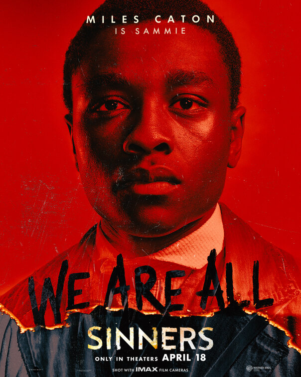
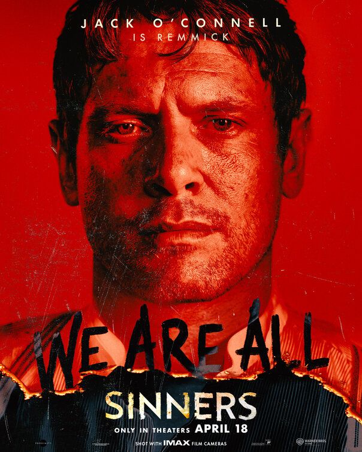
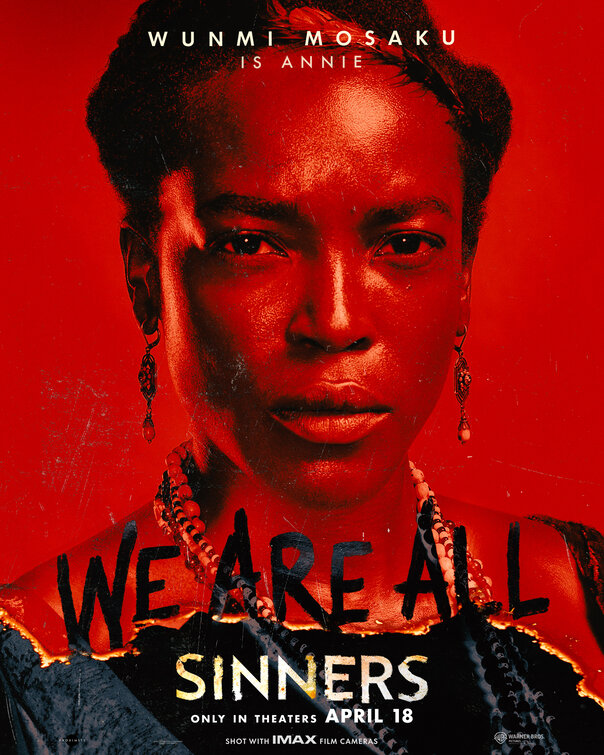
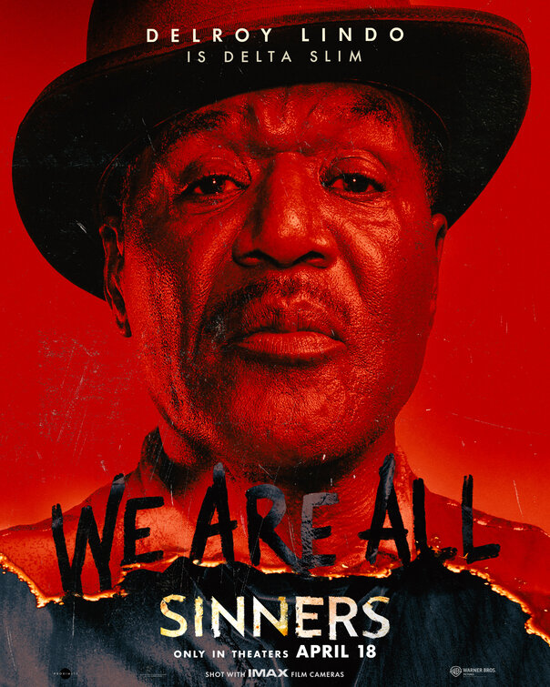
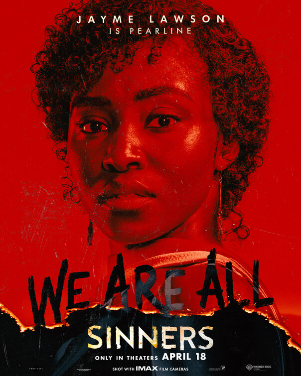
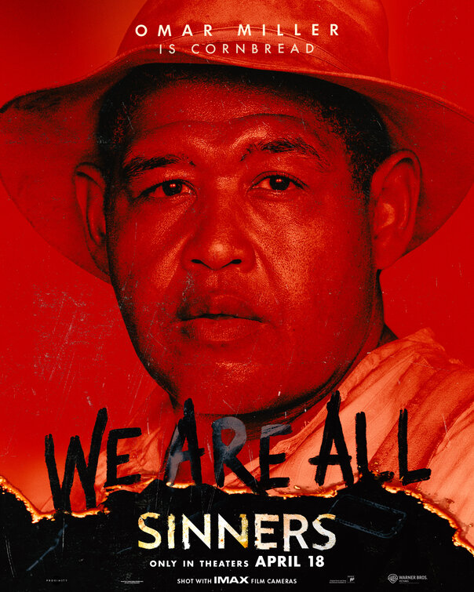
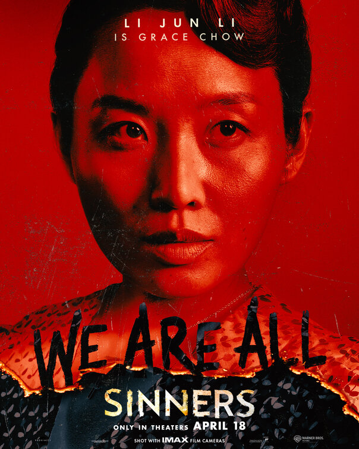
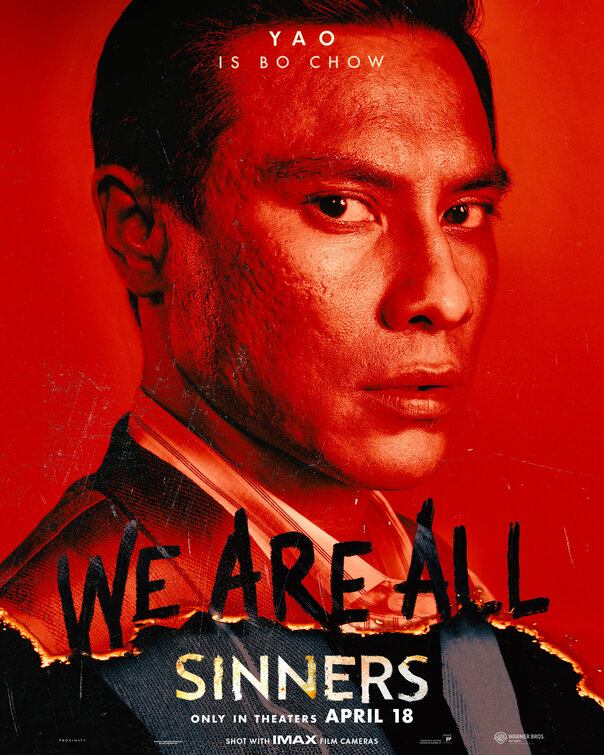

Michael B. Jordan
Interpreta os irmãos gêmeos Smoke e Stack Moore, protagonistas da trama.

Hailee Steinfeld
Vive Mary, uma aliada dos irmãos na luta contra o mal sobrenatural.

Miles Caton
Estreia como Sammie Moore, primo dos protagonistas e músico talentoso.

Jack O'Connell
Interpreta Remmick, o antagonista vampiro que ameaça a cidade.

Wunmi Mosaku
Vive Annie, uma figura chave na resistência contra as forças do mal.

Delroy Lindo
Interpreta o Delta Slim, habilidoso artista do blues.

Jayme Lawson
Vive Pearline, uma jovem cantora do blues.

Omar Benson Miller
Interpreta Cornbread, trabalhador rural e segurança.

Li Jun Li
Grace Chow, esposa de Bo e comerciante local.

Yao
marido de Grace e também comerciante.